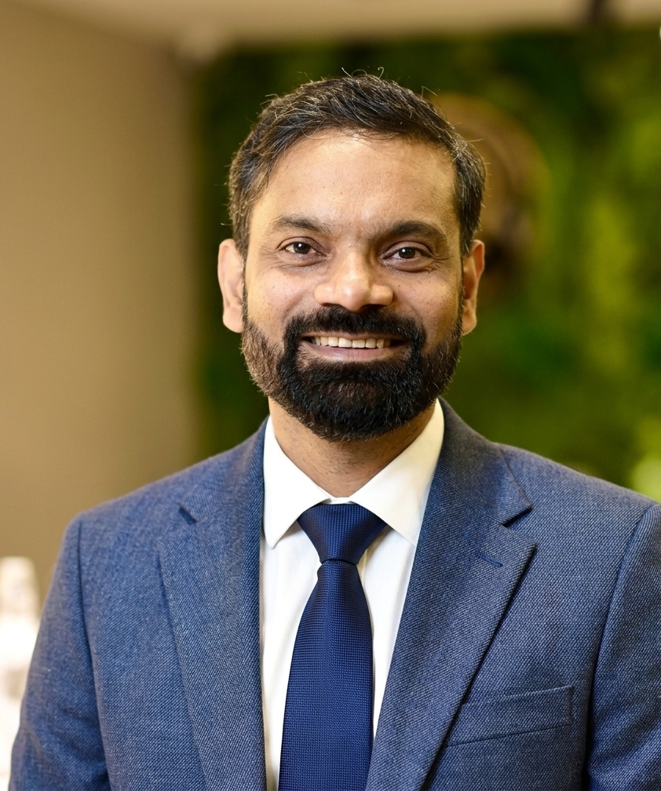

Applied AI & agentic systems
LLMs, RAG, intelligent workflows, and AI-assisted modernization using Claude, OpenAI, LangChain, LangGraph, and CrewAI.
Hello, I’m Puspamitra Mishra.
I connect enterprise ambition with thoughtful architecture—turning complex systems into scalable platforms and applied AI into measurable business value.

Four enterprise AI programs. A shared focus on useful intelligence, thoughtful controls, and business outcomes.
 Life sciences
Life sciencesA source-grounded copilot that helps medical writers draft, verify, and deliver clinical and regulatory documents.
 Pharmaceuticals
PharmaceuticalsSegment-aware pricing that brings predictive models, mathematical optimization, and clear explanations into the quoting workflow.
 Health insurance
Health insuranceAn event-driven agentic pipeline that moves routine claims forward and gives evaluators the context to resolve exceptions.
Document intelligence and verification agents that prepare loan files, clear routine conditions, and support human underwriters.
Outcomes summarized from my project highlights. Client organizations are not identified in these case studies.
I’m an enterprise solutions architect and senior engineering leader with over 24 years of experience across banking, insurance, healthcare, and life sciences.
My work spans AI adoption, cloud migration, API modernization, and the engineering organizations that make transformation possible. I bring architectural decisions and executive delivery into the same conversation.
Explore my experience ↓LLMs, RAG, intelligent workflows, and AI-assisted modernization using Claude, OpenAI, LangChain, LangGraph, and CrewAI.
AWS, Azure, and GCP architecture. Cloud migration, FinOps, resiliency, and pragmatic platform optimization.
High-throughput APIs, Kong, APIC, APIGEE, event-driven systems, Kafka, and cloud-native microservices.
Global organizations of 350+ engineers, cross-functional alignment, talent development, and end-to-end delivery.
Deep technical foundations. Global delivery experience. An enduring focus on making enterprise technology work better.
Download profile (PDF) ↓Utkal University, India
Claude Certified Architect — Professional2026
TCS Generative AI Executive Level2025
AWS Solutions Architect — Associate2024
Sun Certified Java ProgrammerSCJP · SE 5.0
Let’s talk about enterprise AI, platform modernization, or the next chapter of your technology transformation.